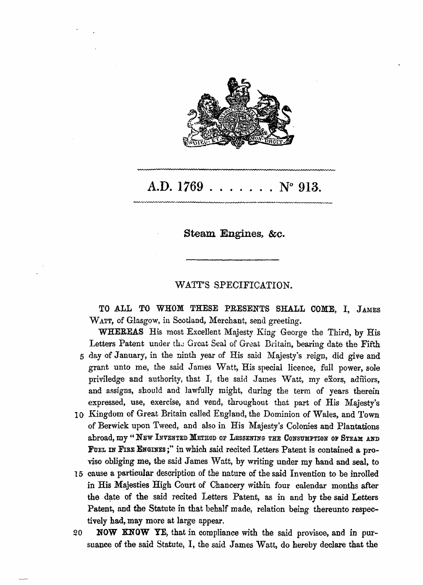
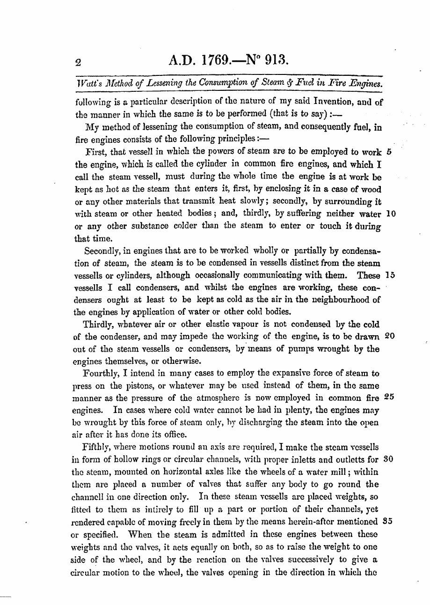
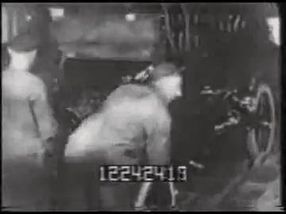
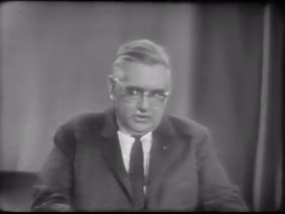
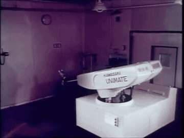
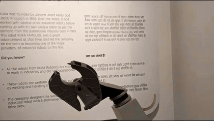
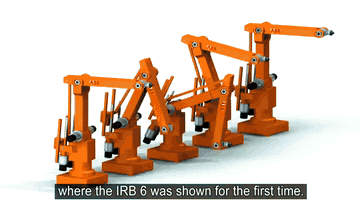

PREVENCIÓN Y SEGURIDAD EN LA AUTOMATIZACIÓN INDUSTRIAL
De los orígenes de la robótica a la normativa moderna de prevención de riesgos.
De los orígenes de la robótica a la normativa moderna de prevención de riesgos.
| Año | Hito | Descripción |
|---|---|---|
| 1769 | Máquina de Vapor de Watt | Patente de James Watt, mejora con condensador separado y regulador centrífugo, inicio de la mecanización. |
| 1913 | Cadena de Montaje Móvil | Implementada por Henry Ford para la fabricación de automóviles, estableciendo el flujo continuo. |
| 1952 – 1959 | Control Numérico (NC) y APT | Desarrollo de la fresadora de control numérico y el sistema de programación automática en el MIT. |
| 1961 | Primer Robot Industrial (Unimate) | George Devol y Unimation instalan el primer manipulador programable en General Motors. |
| 1967 – 1969 | Expansión Japonesa | Acuerdo entre Kawasaki y Unimation para la producción masiva del robot Kawasaki-Unimate 2000. |
| 1973 | KUKA FAMULUS (6 Ejes) | Primer robot industrial eléctrico de seis ejes presentado en Alemania. |
| 1974 | ASEA IRB 6 y SEAT España | Presentación del robot eléctrico IRB 6 (Suecia) e incorporación de tres robots con tecnología FIAT en SEAT Zona Franca. |


Método para reducir el consumo de vapor y combustible en las máquinas de fuego.
Idea clave: un condensador separado del cilindro, que se mantiene siempre caliente.
Inicio de la mecanización.
El PDF completo del documento está en la diapositiva de la máquina de vapor.

Implementada por Henry Ford para la fabricación de automóviles.
Establece el flujo continuo de producción.

Desarrollo de la fresadora de control numérico sobre un modelo Cincinnati Hydro-Tel de 3 ejes verticales.
Sistema de programación automática APT (Automatically Programmed Tools).

Acuerdo entre Kawasaki y Unimation para la producción masiva del robot Kawasaki-Unimate 2000.

Primer robot industrial eléctrico de seis ejes, presentado en Alemania.

Presentación del robot eléctrico IRB 6 (Suecia).
En SEAT Zona Franca (Barcelona) se incorporan los primeros robots de Cataluña: tres unidades con tecnología FIAT.
La normativa de seguridad en automatización industrial busca disminuir los riesgos y la gravedad de los accidentes, estableciendo requisitos comunes para el diseño, uso y mantenimiento de robots y sistemas automatizados.
Norma pionera de ámbito internacional. Define e identifica los riesgos fundamentales asociados a los robots y establece el análisis de seguridad correspondiente. Sus indicaciones son de carácter general.
Publicada originalmente en 1986 y revisada en 1992. Destaca por incluir estudios empíricos sobre la probabilidad y gravedad de los accidentes, vinculándolos directamente a la experiencia y formación del operador.
El Comité Europeo de Normalización (CEN) aprobó en 1992 la adaptación europea de la ISO 10218. Inmediatamente, AENOR adoptó este estándar para España bajo la denominación UNE-EN 775.
Datos del Instituto de Seguridad del Trabajador de Tokio revelan una estadística vital:
(El humano entra en el dominio de la máquina).
(El humano está fuera del perímetro activo).